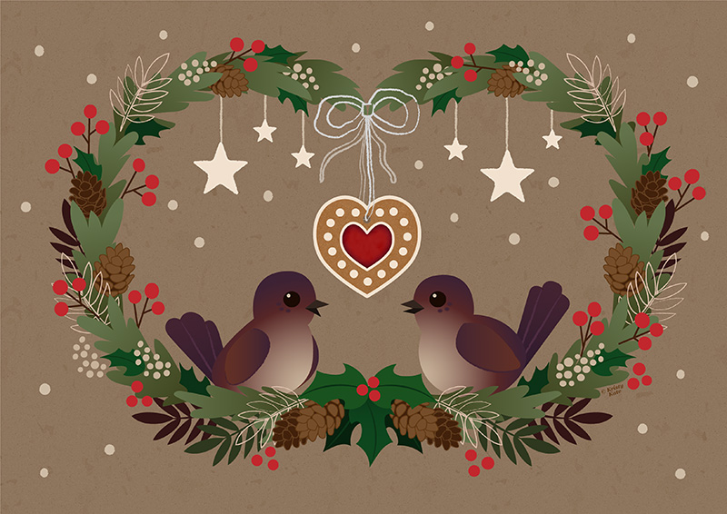

Merry Christmas!

MERRY CHRISTMAS!
It's been such a busy end to the year and some time between posts, but since the festive season is upon us, I'd like to take a moment to wish you all a very Merry Christmas and a Happy New Year!
I'll be back in the new year to fill in the gaps of what's been happening on my end over the past few months, but in the meantime,
May your holidays be filled with peace, love and joy, and 2015 be your greatest year yet!
All the best,
Kristy xox